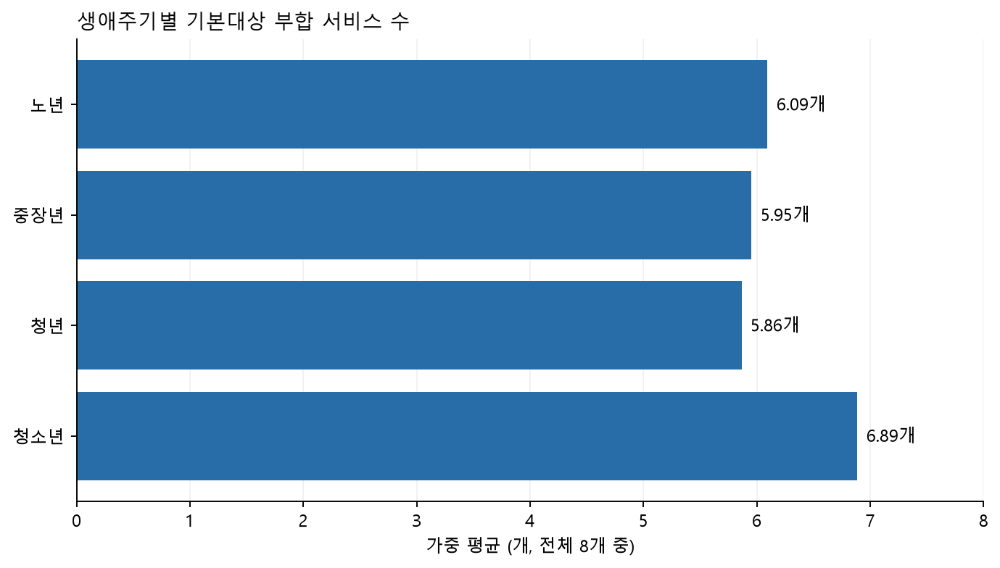
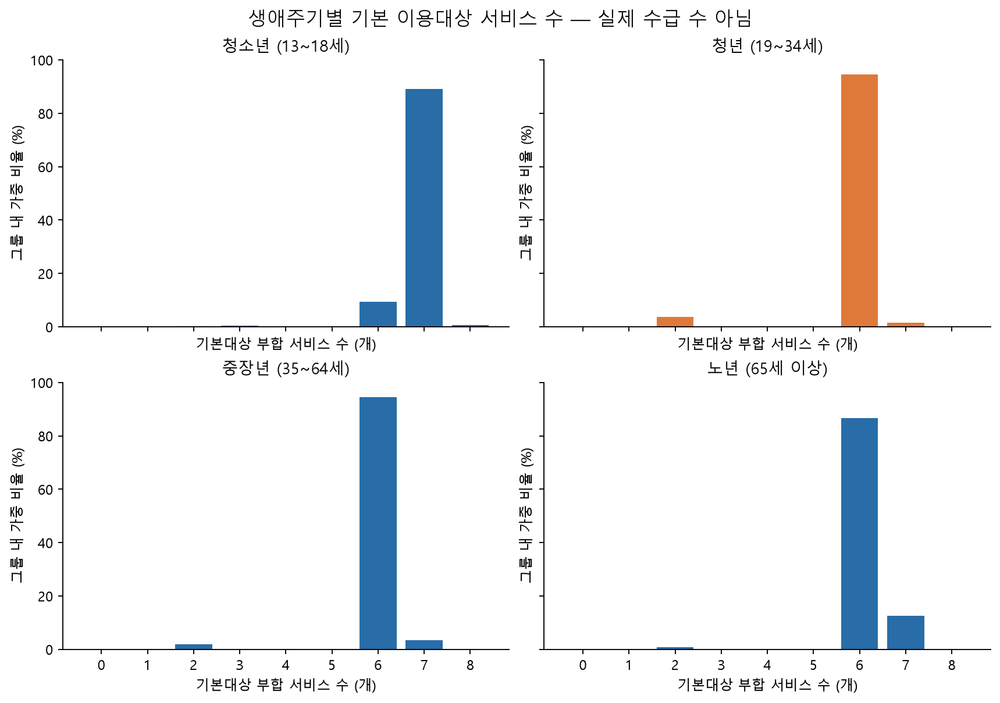
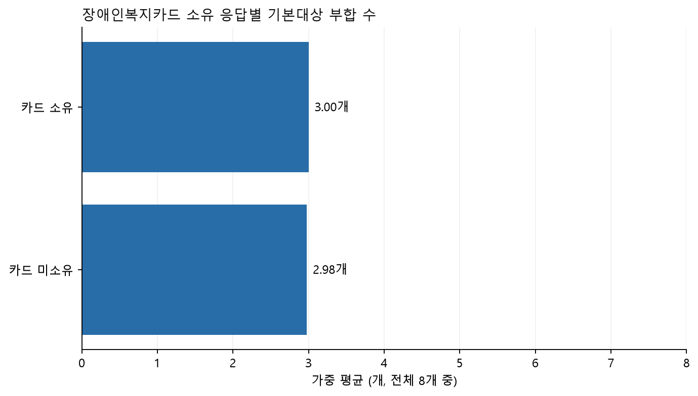

공통변수 오류를 수정한 v3 결과입니다. 미관측 조건을 충족으로 처리하지 않습니다. 수정 내역과 검증 범위
별도 분석: 전 표본에서 추가 질문 없이 일반안내하는 범위를 검토한 모델 B 보고서를 확인하세요.8개 분석은 v3 관측조건을 적용하며 실제 수급자격 확정이 아닙니다.
공통변수와 재분석 결과
여기서 기본대상 부합은 v3의 관측조건 또는 명시적 일반안내 범위에 부합한다는 뜻이며 실제 자격 확정이 아닙니다. 관측되지 않은 상담·교육 필요성은 미확인으로 남깁니다. 실제 신청 승인·선정·급여 지급을 예측하지 않습니다. 미확인을 부적격으로 처리하지 않았습니다.
v3는 직접 관측된 국적·학교 재학을 사용하고 등록자격·상담·교육 필요성은 미확인으로 남깁니다. 연령은 생애주기별 집계를 위한 변수입니다. 소득·수급자 근사지표는 자격 조건으로 사용하지 않습니다.
생애주기별 평균
| 구분 | 표본수 | 기본대상부합_가중평균 | 추가확인_가중평균 | 명시비해당_가중평균 | 중앙값_비가중 |
|---|---|---|---|---|---|
| 청소년 | 1884 | 2.99 | 4.91 | 0.10 | 3.00 |
| 청년 | 5393 | 2.96 | 4.04 | 1.00 | 3.00 |
| 중장년 | 17171 | 2.98 | 4.02 | 1.00 | 3.00 |
| 노년 | 9496 | 2.99 | 4.01 | 1.00 | 3.00 |

생애주기별 분포

장애인복지카드 소유 응답별
| 구분 | 표본수 | 기본대상부합_가중평균 | 추가확인_가중평균 | 명시비해당_가중평균 | 중앙값_비가중 |
|---|---|---|---|---|---|
| 카드 미소유 | 31892 | 2.98 | 4.08 | 0.94 | 3.00 |
| 카드 소유 | 2052 | 3.00 | 4.01 | 0.99 | 3.00 |

카드 소유 응답은 원관측으로 보존합니다. 장애인 정보화교육의 등록자격과 교육 필요성은 관측되지 않아 현재 판정은 미확인입니다.
수급자별 비교
사회조사에서 법정 기초생활수급·차상위 자격이 직접 관측되지 않으므로 해당 비교를 산출하지 않았습니다. 생활비 마련방법을 수급자 여부로 바꾸지 않습니다.